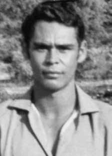

Otoniel
Campos
Barreto
CIRCUNSTÂNCIAS DA MORTE
As forças de segurança conseguiram localizar Carlos Lamarca a partir de colaboração entre o Centro de Informações e Segurança da Aeronáutica (CISA) e o Centro de Informações do Exército (CIE), do interrogatório e possível tortura de uma pessoa ligada ao MR-8 e também por informações alcançadas com a descoberta de um diário e cartas que Lamarca havia escrito para Iara Iavelberg. Estes documentos estavam sob a guarda de militantes do MR-8, presos em Salvador e no Rio de Janeiro.
Após a localização do apartamento em que Iara estava escondida, no bairro da Pituba, em Salvador, agentes militares e policiais do DOI investiram sobre o local, executaram Iara e prenderam outros militantes. A Operação Pajussara contou com a participação de agentes do DOI-CODI da VI Região Militar, do DOPS/SP, da Polícia Militar da Bahia, da Polícia Federal, FAB, do CIE, do CISA e do Centro de Informações da Marinha (CENIMAR), com oficiais e agentes da Bahia, Pernambuco, Rio de Janeiro e São Paulo. Contou também com apoio logístico de empresas como Companhia de Mineração Boquira, Transminas e Petrobras, com funcionários e helicópteros.
De acordo com o relatório da operação, datado de 19 de outubro de 1971, no dia 27 de agosto, com a chegada do major Nilton Cerqueira, chefe da 2ª. Seção do Estado Maior da 6ª Região Militar e comandante da operação, a Oliveira dos Brejinhos, foi feita uma reunião para estudo da situação e concluiu-se que o local onde deveria estar Lamarca era a casa da família Barreto, em Buriti Cristalino. Segundo o documento, “em consequência, e para evitar a quebra do sigilo, decidiu-se investir sobre a fazenda Buriti na madrugada de 28 [de agosto], sábado, com o emprego das equipes reservas, […] Equipe Oscar (DOPS-SP) […]; em sua esteira seguiram as equipes Hotel (CISA) e Cinófilas (PM-BA)”.
Mais adiante, o relatório diz que “o sigilo da Operação [Pajussara] foi mantido até o tiroteio na Fazenda Buriti, sendo quebrado totalmente após o emprego de helicópteros”. No dia 28 de agosto, equipes do DOPS/SP, comandada pessoalmente pelo delegado Sérgio Fernando Paranhos Fleury, e do CISA invadiram a casa da família Barreto. Durante a ação dos agentes, Olderico Barreto, um dos irmãos de Otoniel, levou um tiro no rosto e Otoniel foi morto com vários tiros, inclusive pelas costas e de cima para baixo.
O investigador José Campos Correia Filho, o Campão, da equipe do delegado Fleury, é apontado como o autor dos disparos fatais. O pai de Zequinha, Otoniel e Olderico, José de Araújo Barreto, de 64 anos, foi torturado, da mesma forma que seu filho, Olderico. Entre outros, participaram desta operação, pela equipe do delegado Fleury, além de Campão, também os investigadores do DOPS-SP João Carlos Tralli e Fininho.
O relatório oficial da Operação Pajussara é esclarecedor quando descreve as características da ocupação do local feita pelas Forças Armadas e por policiais, mostrando que o povoado do Buriti Cristalino, chamado pelos agentes de Fazenda Buriti, se transformou, temporariamente, em base assemelhada a um estabelecimento policial, conforme citação: “[…] em Fazenda Buriti houve grande concentração de equipes, após o estouro do “aparelho‟, em face da necessidade de desenvolver intenso patrulhamento”.
Os dados do relatório citado foram confirmados pelos depoimentos dos moradores e constam do auto de qualificação e interrogatório de Olderico Campos Barreto, de 18 de abril de 1979, na Auditoria da 6ª Circunscrição Judiciária Militar. Rosalvo Machado Rosa e Reuel Pereira da Silva, arrolados como testemunhas no processo contra Olderico, confirmam que sua casa foi cercada por agentes policiais. Reuel informa também que, como guia dos agentes, “passou no local dos fatos cerca de uma semana”.
A morte de Otoniel foi divulgada pelos jornais, que afirmaram que ele efetuou um disparo de arma de fogo e saiu correndo, em ziguezague, quando foi atingido. O laudo necroscópico, contudo, é impreciso e não estabelece a trajetória dos disparos, mas permite concluir que ele recebeu um disparo na cabeça, de frente, e foi alvejado pelas costas. Há ainda um disparo no ombro direito, com orifício de entrada de cima para baixo, indicando que deveria estar deitado ao receber tal projétil, característico de execução.
No interrogatório judicial de Olderico, irmão de Otoniel, há o relato do ocorrido: Otoniel foi detido e espancado; Olderico, reagiu, sendo atingido por um disparo no rosto. Quando recobrou os sentidos, foi preso e conduzido, juntamente com o pai e o irmão, para a frente da casa. Otoniel foi despido, ficando apenas de calção. Havia uma arma de fogo na sua calça, deixada nas proximidades, fato não percebido pelos agentes. Levaram o pai para o barracão e o penduraram por uma corda, de cabeça para baixo, e com socos, golpes de armas e ameaças de morte, exigiram saber o paradeiro do filho Zequinha.
Do lado de fora, Otoniel, desesperado pelo sofrimento do pai, alcançou a arma, deu um disparo e saiu correndo, quando foi atingido. Olderico disse que, enquanto era espancado, um policial lhe falou, referindo-se ao seu irmão morto: “Isso é para ver o que acontece com quem foge”.
O relator do caso de Otoniel na CEMDP, Luís Francisco Carvalho Filho, escreveu em seu voto: Reuel Pereira da Silva, soldado e morador no município, deu dois depoimentos à Justiça Militar, um em 1972 e outro em 1979. No primeiro, além de esclarecer que se engajou na equipe de repressão, confirma que Otoniel já estava detido, sob sua guarda, antes de morrer, e esclarece que naquele momento o pai dos rapazes havia sido conduzido, algemado, para um barracão. Diz que foi surpreendido e atingido de raspão pelo tiro dado por Otoniel (informação desmentida pelo relatório da “Operação Pajussara”, que não registra vítimas, e por ele próprio, no depoimento de 1979).
O depoente não conseguiu segurar Otoniel, apesar de sair em seu encalço, sendo que outros agentes o perseguiram, ouvindo depois diversos disparos. O relator ressaltou que “a atitude negligente dos policiais, de deixar uma arma a seu alcance, não retira a responsabilidade do poder público”. E conclui: “Se atiravam pelas costas, o provável é que Otoniel tenha sido atingido, primeiro nas costas (o laudo registra dois tiros disparados pelas costas)”. E questionou: e os outros tiros, um na cabeça, pela frente, e outro no ombro, de cima para baixo? Execução? O fato é que os disparos, todos direcionados para o tronco e para a cabeça, indicam a intenção de matar, não de imobilizar, quando a finalidade legítima de qualquer operação militar é deter.
O fato é que as forças oficiais estavam ali, como registra o relatório da Operação Pajussara, para “capturar ou destruir”. Esta é a lógica da guerra, não é a lógica do Direito, que deve prevalecer na ação dos agentes do poder público. Destruir, por destruir, não é, não era, uma atitude juridicamente tolerável, até mesmo durante período de exceção institucional. Desta forma, o relator votou pelo deferimento.
Em 19 de novembro de 1996, o caso de Otoniel foi aprovado por 4 votos a favor e 2 contra, os do general Oswaldo Pereira Gomes e Paulo Gustavo Gonet Branco. O corpo de Otoniel ficou exposto no chão por horas. Depois, foi sepultado no cemitério local. Entretanto, na tarde do mesmo dia, foi retirado da sepultura por agentes. Em depoimento à Comissão Nacional da Verdade e à Comissão da Verdade Rubens Paiva de São Paulo, Olderico Barreto contou que “Otoniel foi morto, e deixado; veio um carcará e comeu os olhos dele.
Imagina você ver uma foto. Primeiro, há quantas ações: eles matam, deixam o cara no sol, vem um carcará, come o olho dele, eles pegam, sepultam, arrancam…” Os agentes, após receberem ordem de superior, transportaram o corpo de Otoniel – juntamente com Luiz Antônio Santa Bárbara, morto na mesma ação – para Salvador (BA), à revelia da família, onde foi enterrado no cemitério Campo Santo.
The security forces managed to locate Carlos Lamarca through collaboration between the Air Force Information and Security Center (CISA) and the Army Information Center (CIE), the interrogation and possible torture of a person linked to the MR-8 and also through information obtained with the discovery of a diary and letters that Lamarca had written to Iara Iavelberg. These documents were in the custody of MR-8 militants, arrested in Salvador and Rio de Janeiro.
After locating the apartment in which Iara was hiding, in the Pituba neighborhood, in Salvador, military and police agents from the DOI attacked the place, executed Iara and arrested other militants. Operation Pajussara included the participation of agents from DOI-CODI of the VI Military Region, DOPS/SP, the Military Police of Bahia, the Federal Police, FAB, CIE, CISA and the Navy Information Center (CENIMAR), with officers and agents from Bahia, Pernambuco, Rio de Janeiro and São Paulo. It also had logistical support from companies such as Companhia de Mineração Boquira, Transminas and Petrobras, with employees and helicopters.
According to the operation report, dated October 19, 1971, on August 27, with the arrival of Major Nilton Cerqueira, head of the 2nd. Section of the General Staff of the 6th Military Region and commander of the operation, Oliveira dos Brejinhos, a meeting was held to study the situation and it was concluded that the place where Lamarca should be was the Barreto family home, in Buriti Cristalino. According to the document, “as a result, and to avoid breaking confidentiality, it was decided to invest in the Buriti farm in the early hours of the 28th [of August], Saturday, with the use of reserve teams, […] Oscar Team (DOPS-SP) […]; in its wake followed the Hotel (CISA) and Cinófilas (PM-BA) teams”.
Further on, the report says that “the secrecy of Operation [Pajussara] was maintained until the shooting at Fazenda Buriti, being completely broken after the use of helicopters”. On August 28, teams from DOPS/SP, personally commanded by delegate Sérgio Fernando Paranhos Fleury, and CISA invaded the Barreto family home. During the agents' action, Olderico Barreto, one of Otoniel's brothers, was shot in the face and Otoniel was killed with several shots, including in the back and from top to bottom.
Investigator José Campos Correia Filho, known as Campão, from Chief Fleury's team, is identified as the author of the fatal shots. The father of Zequinha, Otoniel and Olderico, José de Araújo Barreto, aged 64, was tortured, in the same way as his son, Olderico. Among others, delegate Fleury's team participated in this operation, in addition to Campão, also DOPS-SP investigators João Carlos Tralli and Fininho.
The official report of Operation Pajussara is enlightening when it describes the characteristics of the occupation of the site carried out by the Armed Forces and police, showing that the village of Buriti Cristalino, called Fazenda Buriti by the agents, was temporarily transformed into a base similar to a police establishment, as quoted: “[…] in Fazenda Buriti there was a large concentration of teams, after the “apparatus” burst, due to the need to carry out intense patrolling”.
The data in the aforementioned report were confirmed by the residents' testimonies and appear in the qualification and interrogation report of Olderico Campos Barreto, dated April 18, 1979, in the Audit of the 6th Military Judiciary Circuit. Rosalvo Machado Rosa and Reuel Pereira da Silva, listed as witnesses in the case against Olderico, confirm that their house was surrounded by police agents. Reuel also informs that, as a guide for the agents, “he spent around a week at the scene of the events”.
Otoniel's death was reported by the newspapers, which stated that he fired a firearm and ran in a zigzag pattern when he was hit. The autopsy report, however, is imprecise and does not establish the trajectory of the shots, but allows us to conclude that he was shot in the head, from the front, and was shot from behind. There is also a shot in the right shoulder, with an entry hole from top to bottom, indicating that he should have been lying down when receiving such a projectile, characteristic of execution.
In the judicial interrogation of Olderico, Otoniel's brother, there is a report of what happened: Otoniel was detained and beaten; Olderico reacted, being shot in the face. When he regained consciousness, he was arrested and taken, together with his father and brother, to the front of the house. Otoniel was stripped naked, leaving only his shorts on. There was a firearm in his pants, left nearby, a fact not noticed by the agents. They took the father to the shed and hung him by a rope, upside down, and with punches, blows of weapons and death threats, they demanded to know the whereabouts of their son Zequinha.
Outside, Otoniel, desperate for his father's suffering, reached for the gun, fired a shot and ran away, when he was hit. Olderico said that, while he was being beaten, a police officer told him, referring to his dead brother: “This is to see what happens to those who run away.”
The rapporteur of Otoniel's case at CEMDP, Luís Francisco Carvalho Filho, wrote in his vote: Reuel Pereira da Silva, a soldier and resident of the municipality, gave two statements to the Military Court, one in 1972 and another in 1979. In the first, in addition to clarifying that he was involved in the repression team, he confirms that Otoniel was already detained, under his guard, before he died, and clarifies that at that moment the boys' father had been taken, handcuffed, to a shed. He says he was surprised and grazed by the shot fired by Otoniel (information contradicted by the “Operation Pajussara” report, which does not record victims, and by himself, in the 1979 testimony).
The deponent was unable to hold Otoniel, despite chasing him, and other agents chased him, later hearing several shots. The rapporteur highlighted that “the negligent attitude of the police, of leaving a weapon within their reach, does not remove the responsibility of the public authorities”. And he concludes: “If they were shooting in the back, it is likely that Otoniel was shot, first in the back (the report records two shots fired in the back).” And he asked: what about the other shots, one to the head, from the front, and another to the shoulder, from top to bottom? Execution? The fact is that the shots, all aimed at the torso and head, indicate the intention to kill, not to immobilize, when the legitimate purpose of any military operation is to detain.
The fact is that the official forces were there, as recorded in the Operation Pajussara report, to “capture or destroy”. This is the logic of war, it is not the logic of Law, which must prevail in the actions of public power agents. Destroying, for the sake of destroying, is not, and was not, a legally tolerable attitude, even during a period of institutional exception. Therefore, the rapporteur voted for approval.
On November 19, 1996, Otoniel's case was approved by 4 votes in favor and 2 against, those of General Oswaldo Pereira Gomes and Paulo Gustavo Gonet Branco. Otoniel's body was exposed on the floor for hours. He was later buried in the local cemetery. However, on the afternoon of the same day, he was removed from the grave by agents. In testimony to the National Truth Commission and the Rubens Paiva Truth Commission of São Paulo, Olderico Barreto said that “Otoniel was killed, and left; a caracará came and ate his eyes.
Imagine you see a photo. First, there are so many actions: they kill, they leave the guy in the sun, a caracara comes, eats his eye, they catch him, they bury him, they pull them out…” The agents, after receiving an order from their superior, transported Otoniel’s body – together with Luiz Antônio Santa Bárbara, who died in the same action – to Salvador (BA), without the family’s consent, where he was buried in the Campo Santo cemetery.
Las fuerzas de seguridad lograron localizar a Carlos Lamarca gracias a la colaboración entre el Centro de Información y Seguridad del Ejército del Aire (CISA) y el Centro de Información del Ejército (CIE), el interrogatorio y posible tortura de una persona vinculada al MR-8 y también a través de información obtenida con el descubrimiento de un diario y cartas que Lamarca había escrito a Iara Iavelberg. Estos documentos estaban en custodia de militantes del MR-8, detenidos en Salvador y Río de Janeiro.
Luego de localizar el apartamento en el que se escondía Iara, en el barrio de Pituba, en Salvador, agentes militares y policiales del DOI atacaron el lugar, ejecutaron a Iara y detuvieron a otros militantes. La Operación Pajussara contó con la participación de agentes del DOI-CODI de la VI Región Militar, DOPS/SP, Policía Militar de Bahía, Policía Federal, FAB, CIE, CISA y el Centro de Información de la Marina (CENIMAR), con oficiales y agentes de Bahía, Pernambuco, Río de Janeiro y São Paulo. También contó con el apoyo logístico de empresas como Companhia de Mineração Boquira, Transminas y Petrobras, con empleados y helicópteros.
Según el informe de operación, fechado el 19 de octubre de 1971, el 27 de agosto, con la llegada del Mayor Nilton Cerqueira, jefe de la 2da. Sección del Estado Mayor de la VI Región Militar y comandante de la operación, Oliveira dos Brejinhos, se realizó una reunión para estudiar la situación y se concluyó que el lugar donde debía estar Lamarca era la casa de la familia Barreto, en Buriti Cristalino. Según el documento, “en consecuencia, y para no romper la confidencialidad, se decidió invertir en el fundo Buriti en la madrugada del sábado 28 [de agosto], con el uso de equipos de reserva, […] el Equipo Oscar (DOPS-SP) […]; tras él siguieron los equipos Hotel (CISA) y Cinófilas (PM-BA)”.
Más adelante, el informe dice que “el secreto de la Operación [Pajussara] se mantuvo hasta el tiroteo en la Fazenda Buriti, siendo completamente roto después del uso de helicópteros”. El 28 de agosto, equipos del DOPS/SP, comandados personalmente por el delegado Sérgio Fernando Paranhos Fleury, y del CISA invadieron la casa de la familia Barreto. Durante la acción de los agentes, Olderico Barreto, uno de los hermanos de Otoniel, recibió un disparo en el rostro y Otoniel fue asesinado de varios disparos, incluso por la espalda y de arriba a abajo.
El investigador José Campos Correia Filho, conocido como Campão, del equipo del jefe Fleury, es identificado como el autor de los disparos mortales. El padre de Zequinha, Otoniel y Olderico, José de Araújo Barreto, de 64 años, fue torturado, al igual que su hijo Olderico. En esta operación participaron, entre otros, el equipo del delegado Fleury, además de Campão, también los investigadores del DOPS-SP João Carlos Tralli y Fininho.
El informe oficial de la Operación Pajussara es esclarecedor al describir las características de la ocupación del lugar llevada a cabo por las Fuerzas Armadas y la policía, mostrando que la aldea de Buriti Cristalino, llamada Fazenda Buriti por los agentes, fue transformada temporalmente en una base similar a un establecimiento policial, como se cita: “[…] en la Fazenda Buriti hubo una gran concentración de equipos, después de la explosión del “aparato”, debido a la necesidad de realizar intensos patrullajes”.
Los datos del citado informe fueron confirmados por los testimonios de los vecinos y aparecen en el informe de calificación e interrogatorio de Olderico Campos Barreto, de 18 de abril de 1979, en la Auditoría del VI Circuito Judicial Militar. Rosalvo Machado Rosa y Reuel Pereira da Silva, que figuran como testigos en el proceso contra Olderico, confirman que su casa fue rodeada por agentes policiales. Reuel también informa que, como guía de los agentes, “estuvo alrededor de una semana en el lugar de los hechos”.
La muerte de Otoniel fue reportada por los diarios, los cuales señalaron que disparó un arma de fuego y corrió en zigzag cuando fue alcanzado. El informe de la autopsia, sin embargo, es impreciso y no establece la trayectoria de los disparos, pero permite concluir que recibió un disparo en la cabeza, de frente, y que recibió un disparo por detrás. También hay un disparo en el hombro derecho, con un orificio de entrada de arriba hacia abajo, lo que indica que debería haber estado acostado al recibir tal proyectil, característico de ejecución.
En el interrogatorio judicial a Olderico, hermano de Otoniel, hay relato de lo sucedido: Otoniel fue detenido y golpeado; Olderico reaccionó recibiendo un disparo en la cara. Cuando recuperó el conocimiento, lo arrestaron y lo llevaron, junto con su padre y su hermano, al frente de la casa. Otoniel fue desnudado, dejándose solo los pantalones cortos. En su pantalón había un arma de fuego, abandonada cerca, hecho no advertido por los agentes. Llevaron al padre al galpón y lo colgaron de una cuerda, boca abajo, y a puñetazos, golpes de arma y amenazas de muerte exigieron saber el paradero de su hijo Zequinha.
Afuera, Otoniel, desesperado por el sufrimiento de su padre, tomó el arma, disparó y salió corriendo, cuando fue alcanzado. Olderico contó que, mientras lo golpeaban, un policía le dijo, refiriéndose a su hermano muerto: “Esto es para ver qué pasa con los que se escapan”.
El relator del caso Otoniel en el CEMDP, Luís Francisco Carvalho Filho, escribió en su voto: Reuel Pereira da Silva, militar y vecino del municipio, rindió dos declaraciones ante el Tribunal Militar, una en 1972 y otra en 1979. En la primera, además de aclarar que participó en el equipo de represión, confirma que Otoniel ya estaba detenido, bajo su custodia, antes de morir, y aclara que en ese momento el El padre de los niños había sido llevado, esposado, a un cobertizo. Dice haber sido sorprendido y rozado por el disparo de Otoniel (información contradicha por el informe de la “Operación Pajussara”, que no registra víctimas, y por él mismo en el testimonio de 1979).
El declarante no pudo retener a Otoniel, a pesar de perseguirlo, y otros agentes lo persiguieron, escuchando posteriormente varios disparos. El relator destacó que “la actitud negligente de la policía, de dejar un arma a su alcance, no exime de responsabilidad a los poderes públicos”. Y concluye: “Si estaban disparando por la espalda, es probable que a Otoniel le dispararan, primero por la espalda (el informe registra dos disparos por la espalda)”. Y preguntó: ¿y los otros tiros, uno en la cabeza, de frente, y otro en el hombro, de arriba hacia abajo? ¿Ejecución? Lo cierto es que los disparos, todos dirigidos al torso y a la cabeza, indican la intención de matar, no de inmovilizar, cuando el objetivo legítimo de cualquier operación militar es detener.
El caso es que las fuerzas oficiales estaban allí, como consta en el informe de la Operación Pajussara, para “capturar o destruir”. Ésta es la lógica de la guerra, no es la lógica del Derecho, que debe prevalecer en el actuar de los agentes del poder público. Destruir por destruir no es, ni era, una actitud jurídicamente tolerable, ni siquiera durante un período de excepción institucional. Por tanto, el ponente votó a favor.
El 19 de noviembre de 1996 el caso de Otoniel fue aprobado por 4 votos a favor y 2 en contra, los del general Oswaldo Pereira Gomes y Paulo Gustavo Gonet Branco. El cuerpo de Otoniel quedó expuesto en el suelo durante horas. Posteriormente fue enterrado en el cementerio local. Sin embargo, la tarde del mismo día fue retirado de la tumba por agentes. En testimonio ante la Comisión Nacional de la Verdad y la Comisión de la Verdad Rubens Paiva de São Paulo, Olderico Barreto dijo que “A Otoniel lo mataron y se fue, vino un caracará y le comió los ojos.
Imagina que ves una foto. Primero, son tantas acciones: matan, dejan al tipo al sol, viene un caracara, le come el ojo, lo atrapan, lo entierran, lo sacan…” Los agentes, luego de recibir una orden de su superior, transportaron el cuerpo de Otoniel – junto con Luiz Antônio Santa Bárbara, fallecido en la misma acción – a Salvador (BA), sin el consentimiento de la familia, donde fue enterrado en el cementerio de Campo Santo.